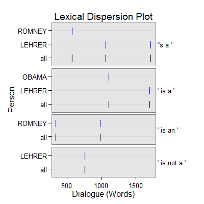

dc_typology(text.var, grouping.var, n.before = 1, tot = FALSE, n.after = n.before, ord.inds = TRUE, markup = c("<<", ">>"), name = "typology", ...)
TRUE condenses sub-units (e.g., sentences)
into turns of talk for that grouping.var.TRUE inds is ordered least to greatest.c("", "") to not mark the typology discourse
markers.termco.Returns returns a list of 3:
countsA termco object of positive and negative typology discourse marker counts.
negativeA trans_context object of positive typology discourse connectors in context.
positiveA trans_context object of negative typology discourse connectors in context.
Extract typology discourse connectors in context.
Ryan, G. W. & Bernard, H. R. (2003). Techniques to identify themes. Field Methods. 15(1), 85-109. doi: 10.1177/1525822X02239569
out <- with(pres_debates2012[1:200, ], dc_typology(dialogue, person)) out[1]$counts person word.count positive negative 1 OBAMA 943 1(.11%) 0 2 ROMNEY 1349 3(.22%) 0 3 LEHRER 316 3(.95%) 1(.32%)out[2]$positive =================================== Event 1: [lines 41-43] OBAMA: And so| ** ROMNEY: That's <<that's a>> big topic. ROMNEY: Can we can we stay on Medicare? =================================== Event 2: [lines 98-100] ROMNEY: You need transparency, you need to have leverage limits for| ** LEHRER: Well, <<here's a>> specific| ROMNEY: But let's let's mention let me mention the other one. =================================== Event 3: [lines 103-105] LEHRER: Let's let him respond let's let him respond to this specific on Dodd Frank and what the governor just said. ** OBAMA: I think this <<is a>> great example. OBAMA: The reason we have been in such a enormous economic crisis was prompted by reckless behavior across the board. =================================== Event 4: [lines 145-147] LEHRER: I think we have another clear difference between the two of you. ** LEHRER: Now, let's move to health care where I know there <<is a>> clear difference, and that has to do with the Affordable Care Act, Obamacare. LEHRER: And it's a two minute new new segment, and that means two minutes each. =================================== Event 5: [lines 146-148] LEHRER: Now, let's move to health care where I know there is a clear difference, and that has to do with the Affordable Care Act, Obamacare. ** LEHRER: And <<it's a>> two minute new new segment, and that means two minutes each. LEHRER: And you go first, Governor Romney.out[3]$negative =================================== Event 1: [lines 66-68] LEHRER: Beginning with you. ** LEHRER: This <<is not a>> new two minute segment to start. LEHRER: And we'll go for a few minutes, and then we're going to go to health care, OK?plot(out)
## Save externally use .doc or .txt ## print(out[[2]], file="neg_typology.doc")